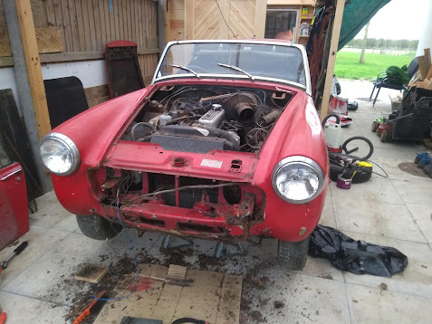
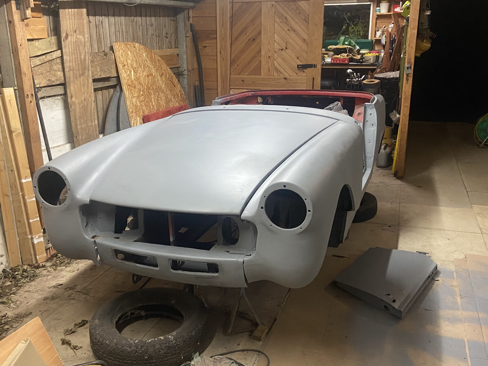
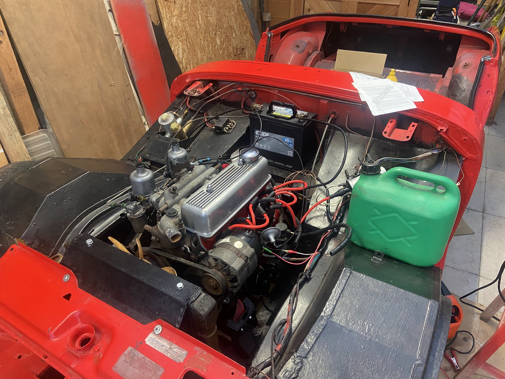

I bought this 1976 MG Midget in January 2020 for just £300. It was full of rust holes, rats and had sat outside for 20 years; so I probably overpaid! However, it came as a complete car and the engine had only done 7000 miles since the last major overhaul (albeit that was 1996). This has been a very long-running project which started during COVID lockdown in 2020, and continued sporadically during breaks from uni and work, finally hitting the road in 2024.

The most time consuming part of the project was the bodywork, which required lots of welding (doors, sills, rear arches, front wings, floor, boot, etc...). The car was in a pretty rough state when I started, with extensive rust damage throughout the body.



BODYWORK AND WELDING
The restoration process involved completely stripping the car down and addressing all the rust issues. This meant learning to weld properly and spending countless hours cutting out old metal and welding in new patches.



PAINTING AND FINISHING
After all the metalwork was complete, the car received a full respray in bright red. This involved extensive preparation work and multiple coats to achieve a quality finish.


MECHANICAL REBUILD
The A-Series engine was completely overhauled, along with the brakes, suspension, steering, and clutch systems. Everything was rebuilt to factory specifications and beyond.

FINAL RESULT
After four years of on-and-off work, the car finally hit the road in 2024. The transformation from a rust bucket to a roadworthy classic was incredibly rewarding.


Can it be sold for a profit?
Nope.
Should I have started with a better car?
Maybe.
Would I do it all again?
Probably not, but I did learn a lot!